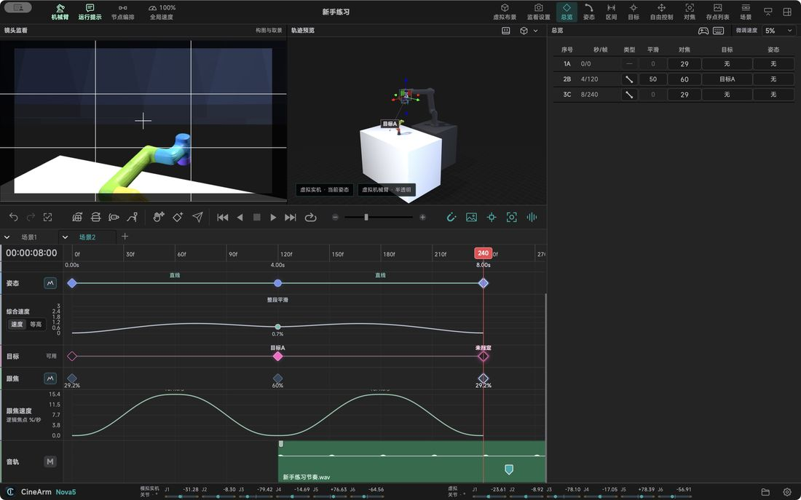

Features in detail / Recording: place it, press once
Recording: place it, press once
Place it, look at it, press once — the shot takes shape.
RecordPut the arm where you want and press once; that is the position.
Insert betweenDrop a point between two others and later timings shift automatically.
Preview freelyDrag the playhead as much as you like — the arm will not move.
Overview tableEvery point's type, smoothing and focus in one table, checked row by row.
Snapshot compareKeep a still of each framing and compare across days.
Reposition as a wholeAdjust the whole rig while the framing stays put.

Describes CineArm v0.1.49.